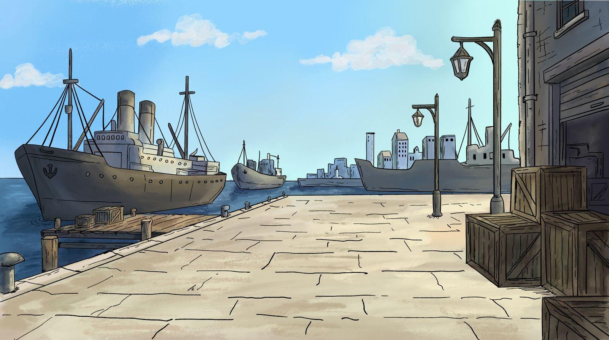
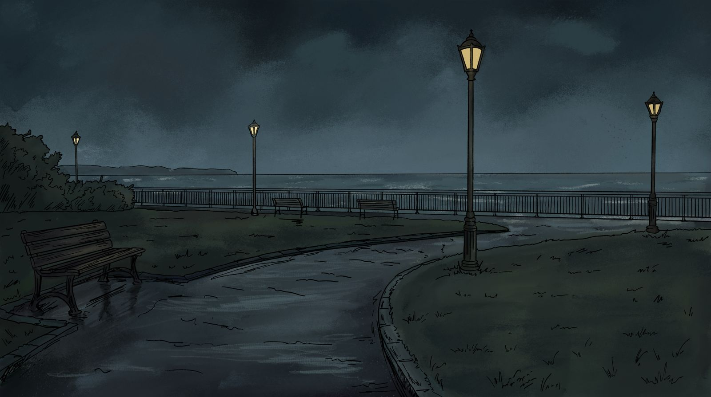
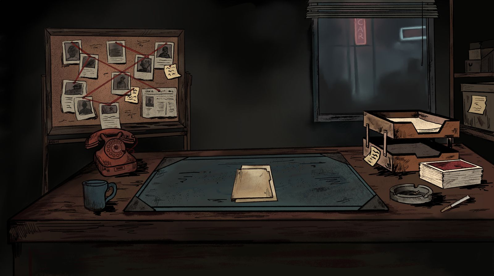
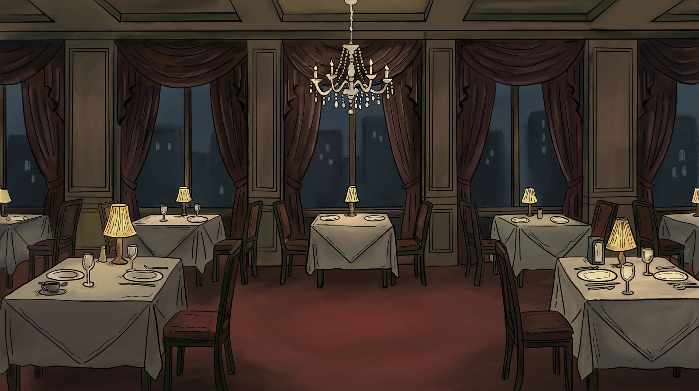

A set of hand-drawn game background illustrations created for a noir-style detective game. Each scene was designed to carry its own atmosphere: a foggy harbor at dawn, a rain-soaked park at night, a dimly lit detective's office with a corkboard full of suspects, and an empty restaurant frozen in silence. Ink linework combined with muted color to build a world that feels lived-in and tense.

Harbor

Park

Room

Dining Room